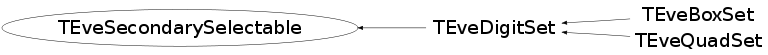

class TEveSecondarySelectable
Semi-abstract interface for classes supporting secondary-selection. Element class that inherits from this, should also implement the following virtuals from TEveElement: virtual void UnSelected(); virtual void UnHighlighted(); and clear corresponding selection-set from there. To support tooltips for sub-elements, implement: virtual TString TEveElement::GetHighlightTooltip(); and return tooltip for the entry in the fHighlightedSet. There should always be a single entry there. See TEveDigitSet for an example.
Function Members (Methods)
public:
| TEveSecondarySelectable() | |
| virtual | ~TEveSecondarySelectable() |
| static TClass* | Class() |
| Bool_t | GetAlwaysSecSelect() const |
| virtual TClass* | IsA() const |
| void | ProcessGLSelection(TGLSelectRecord& rec) |
| const TEveSecondarySelectable::SelectionSet_t& | RefHighlightedSet() const |
| const TEveSecondarySelectable::SelectionSet_t& | RefSelectedSet() const |
| void | SetAlwaysSecSelect(Bool_t f) |
| virtual void | ShowMembers(TMemberInspector& insp) |
| virtual void | Streamer(TBuffer& b) |
| void | StreamerNVirtual(TBuffer& b) |
protected:
| void | ProcessGLSelectionInternal(TGLSelectRecord& rec, TEveSecondarySelectable::SelectionSet_t& sset) |
private:
| TEveSecondarySelectable(const TEveSecondarySelectable&) | |
| TEveSecondarySelectable& | operator=(const TEveSecondarySelectable&) |
Data Members
protected:
| Bool_t | fAlwaysSecSelect | Always do secondary-selection in GL. |
| set<int> | fHighlightedSet | Highlighted indices. |
| set<int> | fSelectedSet | Selected indices. |
Class Charts
{kind=link}
{kind=link}
{kind=link}
{kind=link}

Function documentation
void ProcessGLSelection(TGLSelectRecord& rec)
Process secondary GL selection and populate selected set accordingly.
void ProcessGLSelectionInternal(TGLSelectRecord& rec, TEveSecondarySelectable::SelectionSet_t& sset)
Process secondary GL selection and populate given set accordingly.